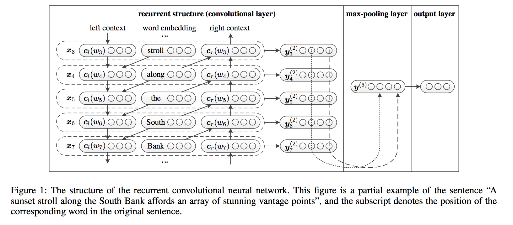
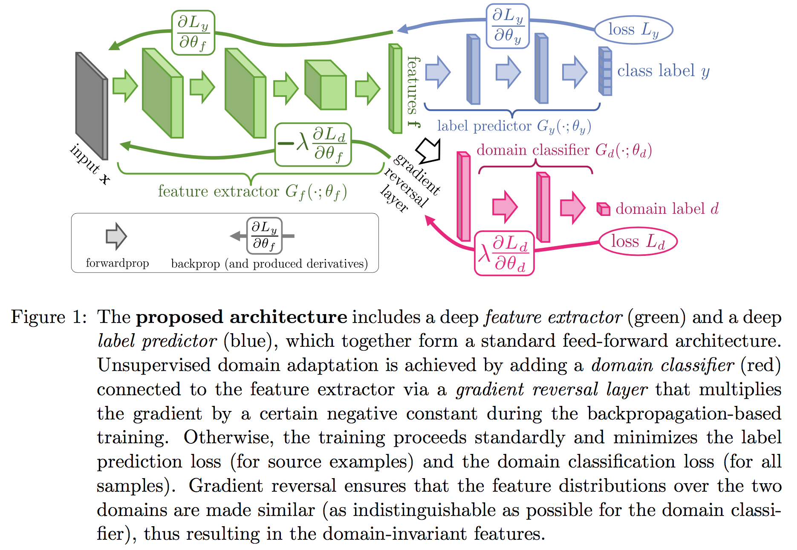
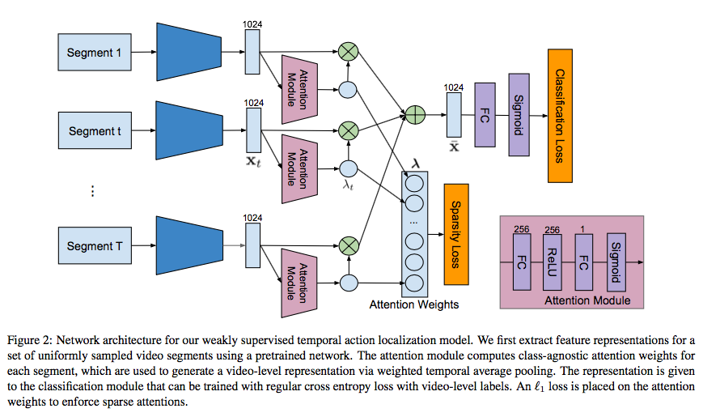
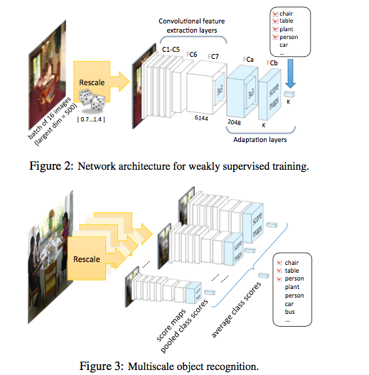
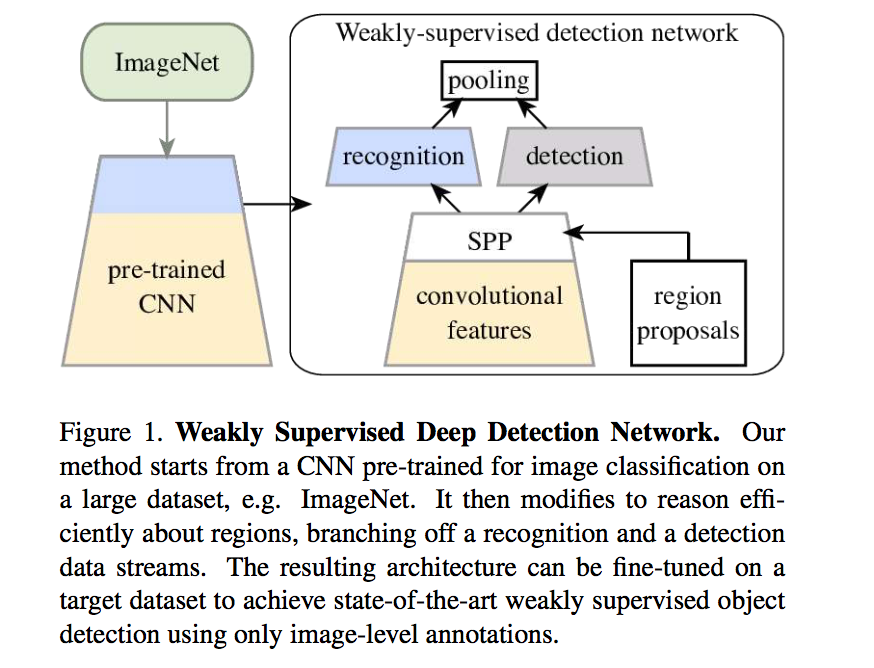
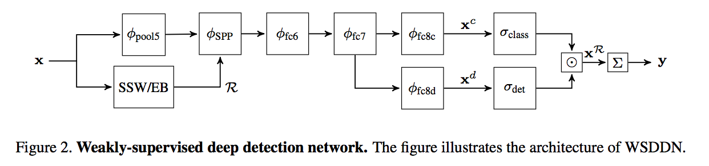
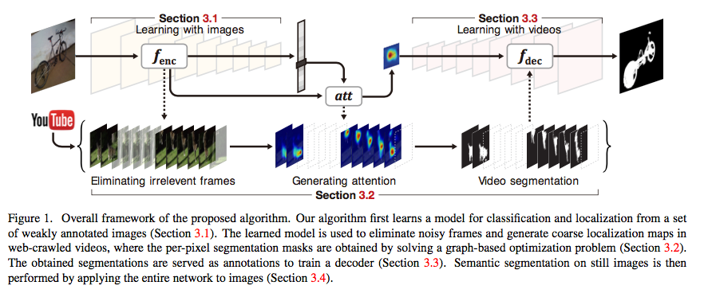
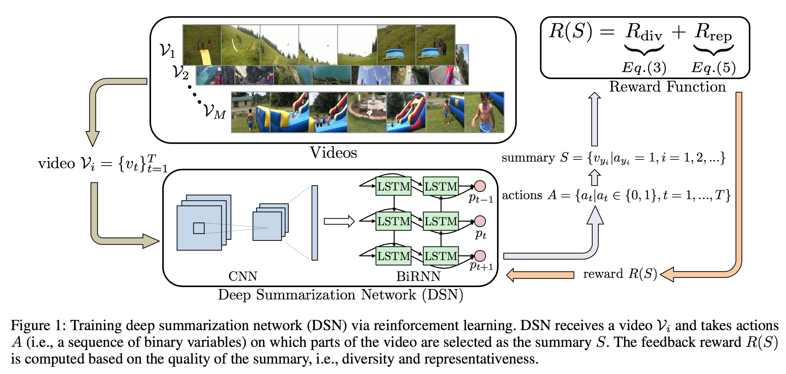
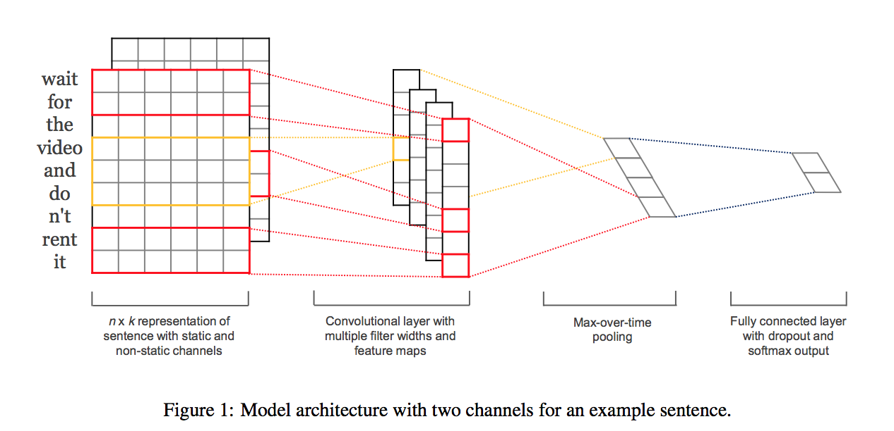

目录
- 前言
- 数据集和评测方法
- 半监督学习
- (GAN, semi-Supervised) Improved Techniques for Training GANs
- (semi-Supervised, Transfer learning) Domain-Adversarial Training of Neural Networks
- (ML) Semi-Supervised Learning with Ladder Networks
- (ML) Distributional Smoothing with Virtual Adversarial Training
给一个x，它的标签已知，是y。如果我们发现在x旁边一点点的一个地方一个x’，模型预测出来的标签却不是y。那么，这就违背了一个假设：临近的样本一定有临近的标签。
- 弱监督学习
- Weakly Supervised Action Localization by Sparse Temporal Pooling Network
- (Object detection) Is object localization for free? Weakly-supervised learning with convolutional neural network
- (Object detection) Weakly Supervised Deep Detection Networks
- (Semantic segmentation, weakly supervised) Weakly Supervised Semantic Segmentation using Web-Crawled Videos
- (Semantic segmantation, weakly supervised) Object Region Mining with Adversarial Erasing: A Simple Classification to Semantic Segmentation Approach
- 监督学习
- End-to-end Learning of Action Detection from Frame Glimpses in Videos
- Quo vadis, action recognition? a new model and the kinetics dataset
- Multi-region Two-Stream R-CNN for Action Detection
- Temporal Action Detection with Structured Segment Networks
- RPAN：An end-to-end recurrent pose-attention network for action recognition
- (Online) RED: Reinforced Encoder-Decoder Networks for Action Anticipation
- 跨领域参考
- (NLP region) End-to-end Sequence Labeling via Bi-directional LSTM-CNNs-CRF
- (RL, Videl summarization, Unsupervised) Deep Reinforcement Learning for Unsupervised Video Summarization with Diversity-Representativeness Reward
- (NLP) A Latent Semantic Model with Convolutional-Pooling Structure for Information Retrieval
- (NLP, CNN) Convolutional Neural Networks for Sentence Classification
- A convolutional neural network for modelling sentences
- (NLP, RCNN) Recurrent Convolutional Neural Networks for Text Classification
 - (NLP, attention) Hierarchical Attention Networks for Document Classification
前言
目前看到的许多文章，都可以认为是一个包含以下部分的框架：
- 帧采样机制
- 时段propose机制
- 位置propose机制
- Frame Embedding
- Video Embedding
- 分类机制
帧采样机制有许多做法：1. 在整个视频中均匀地采样给定数目的帧。（Weakly2018）2.
时段提名机制有许多，可以分为两类：一、前置类。在监督学习中，有的是使用actioness作为判断依据，再根据一些算法求得一段“预期有动作发生”的机制。二、后置类。即根据每帧的分类结果，再用一些算法求出一段某动作置信度都比较高的时间。
位置提名机制有许多。有的是在帧上，用物体检测的方法，如F-CNN等。有的是用attention机制。
Frame Embedding的产生，其实就是一个输入为帧级信息的网络。现在都用Two-stream作为输入。然后在网络结构上有各式各样的设计。
Video Embedding的产生，是依靠Frame Embedding的融合。有人用的是平均池化。有人用“时间金字塔”来融合。
分类机制。分两类：一、视频级分类。二、帧级分类。视频级分类的输入是Video Embedding。又或者是输入所有Frame Embedding给RNN。帧级分类则是每帧都进行一次分类。然后取最大子数组什么的。目前没有看到用CRF代替RNN进行帧级分类的文章。相信效果会比RNN好——显然，前一秒是某个动作的话，下一秒不可能突变到另一个动作。
数据集和评测方法
mAP和IoU是什么：博客文章
半监督学习
半监督学习指的是只有少部分数据有Label。而大部分没有。
(GAN, semi-Supervised) Improved Techniques for Training GANs
将GAN用在半监督领域。创造性的一种设计：让判别器输出K+1个类。其中最后一个类为判定图像为假。那么Loss写成
前一项是普通的分类误差，第二项是判别误差。
猪的注意的是将$D(x) = 1-p_{model} (y=K+1|x)$的话则
正是GAN的形式。
补充：网友说：“在代码中我给出了两种损失函数，一个是原始GAN的交叉熵损失函数，和DCGAN使用的一样，另外一个是improved wgan论文中使用的损失函数，但是在做了对比之后，我强烈建议使用DCGAN来做，improved wgan的损失函数虽然在生成结果的优化上有很大帮助，但是并不适合半监督学习中。”
(semi-Supervised, Transfer learning) Domain-Adversarial Training of Neural Networks

单输入多输出网络。对于有lebel的数据，最小化分类误差和域误差。对于无label的数据，最小化域误差。
所谓域误差，就是一个分类器，判定这个数据是来自有lebel那类的还是没label那类的。它的目的，是要调整网络参数，使得网络的隐含层对输入数据有无label不敏感，即将有label的数据和无label的数据混在一起。这其实利用了一个假设：有无label的数据的分布是一样的。那既然是一样的，就意味着虽然无label的数据没有label，但是它应该和同属于一类的有label的数据聚集在一起，所以如果利用域分类器来将它们混在一起，那么等于说网络从无label的分布中，领悟到了“到底啥样的数据应该要聚在一起”，即从无label的数据中学习到了数据的一些基本的结构，从而帮助了有监督学习。
(ML) Semi-Supervised Learning with Ladder Networks

我们知道，拿一个纯正的x去预测一个纯正的y，这是监督任务。
我们知道AutoEncoder可以拿一个x去形成representation，再reconstruct一个新x。输入的x甚至可以使Corrupted的。
我们还知道AE的loss是新x和输入x的差的一个范数。
如果把AE的思想和监督任务的思想结合起来，并且扩展AE的任务：
不仅要reconstruct输入，而且要reconstruct所有隐含层。并且增加一个原隐含层和打算重构的隐含层之间的短路连接。那这就是一个很复杂的AE。注意有三个$z$，一个是干净的x前馈后得到的$z$，一个是有噪音的x前馈后得到的$\tilde{z}$，一个是由输入不干净的x的重构层的$\hat{z}$。
如果我们再在中间层加一个岔口，叉出去后加一个激活函数层变成了最终label的输出y，那么就可以把有监督任务和无监督任务放在一起变成半监督任务了。
这篇论文的改进就是在 Ladder Networks 上，encoder 部分的每一层 layer 都加入了 Gaussian noise，并保持 decoder 部分是 noise-free 的。加了 noise 的部分用于 unsupervised autoencoder loss，noise-free 的就是用来提供 supervised loss。
(ML) Distributional Smoothing with Virtual Adversarial Training
给一个x，它的标签已知，是y。如果我们发现在x旁边一点点的一个地方一个x’，模型预测出来的标签却不是y。那么，这就违背了一个假设：临近的样本一定有临近的标签。
把这个情况泛化一下，令：
上式用KL散度刻画了样本点x和样本点附近一点点的x+r对应的y的后验分布的散度。换言之就是刻画了这两个样本点之间的y是否相似。然后找到“最不相似”的那个x+r，强制要求Loss函数去优化这个“最不相似”的x+r处的y的分布情况。
由于我们虚拟了一个样本$x+r_{v-adv}$，所以叫VAT。另外上面的LDS，指的就是Local distributional smoothing。可以认为是一种正则化方法，将分布更均匀化了。
弱监督学习
弱监督学习的label只有动作分类，而没有详细的动作开始和结束的时间。
！注意：在动作检测领域，有些数据集甚至是这样的：有所有动作的标签，但是只有一部分样本有时间定位。这其实是半监督学习和弱监督学习都有的情况。
Weakly Supervised Action Localization by Sparse Temporal Pooling Network


这是一个时间定位（无位置检测）的、弱监督的、视频的、视频中有多个动作的、运动检测的任务。
帧级网络：“Quovadis,actionrecognition? a new model and the kinetics dataset”提供的I3D网络。
添加了一个权重单元，从而使得在生成Video Representation的时候，加权地pooling不同帧的Representation。注意这个权重单元是“动作无关”的。然后把video representation扔给一个简单的MLP得到输出。 1
由“ Learning deep features for discriminative localization”启发设计了Temporal Class Activation Mapping(T-CAM)。其实是利用了分类器的激活值，来知道
“这一刻，此动作有没有在发生”。
时段proposal机制：利用T-CAM，经过threshold，得到的许多许多段视频。就完了。我个人觉得如果用了CUHK的那个水淹算法可能会更好。
(Object detection) Is object localization for free? Weakly-supervised learning with convolutional neural network

网络结构是在Alexnet的基础上，将第六、七层的全连接层改为卷积层，再加上两层自适应卷积层，最后一个自适应卷积层后面添加max-pooling层，输出响应最大的点。因为整个网络只有卷积层，所以对输入图像的大小没有限制，前五个卷积层是在Imagenet上进行训练的，后面的几层是在Pascal数据集上进行训练的，所以虽然层数很多，但总体的训练时间没有很长。
作者自行定义的定位的衡量标准：作者是将max-pooling的输出映射到原图，然后将结果与bounding-box标注的结果进行比较，容忍度为18个像素，即将bounding-box向外扩18个像素，如果结果在此之内，则认为定位正确。 （为什么不用IoU啊……）
实验很丰富，任何trick，都有实验证明其是否有效。
(Object detection) Weakly Supervised Deep Detection Networks


ImageNet预训练过的CNN。将features一方面：传给一个Region Proposal的算法SSW或EB形成proposal。另一方面：将Proposal和原来的feature结合，传给一个SPP（空间金字塔池化层）。之后把全连接层fc7的输出分成两路，一路做分类，一路做检测。这两路最终都会输出一个score matrix$\ \in \mathbb{R}^{C\times |R|}$。第一维是类，第二维是各个提出的区域。
分类指的是：在每个给定的区域，这个类的可能性有多大。
检测指的是：这个给定的区域内，这个类有关的信息有多少。（联想：物体性Objectiveness）
输出结果为区域proposal和分类。
(Semantic segmentation, weakly supervised) Weakly Supervised Semantic Segmentation using Web-Crawled Videos

这是一个弱监督的、视频的、物体语义分割的任务。
该论文似乎很有意思，我要精读一下。
- 使用有标签的图片（但是没有语义分割）来训练一个初步的模型。使用Pretrained的imagenet作为模型，但是把最后的全连接层变成了: global average pooling。从而将最后一个卷积层输出的$F(x)\in \mathbb{R}^{w\times h\times d}$变成了一个$\mathbb{R}^{d\times 1}$的向量。
- 与此同时，构造一个attention map: F(x)为最后一个卷积层的输出，W为从平均池化过的向量到softmax的权重。y为标签。他们的维度乘积：$(w\times h\times d)\times(d\times k)\times(k\times 1)$没毛病！（这个机制好棒啊！）
- 使用初步的模型去为视频的每一帧打分。打分太低的帧就扔掉了。如果连续5帧以上都被认为有同一类物体，则将这段视频提取出来准备进行下一步。
……
(Semantic segmantation, weakly supervised) Object Region Mining with Adversarial Erasing: A Simple Classification to Semantic Segmentation Approach
对抗性擦除方法。很有趣。还记得经典的CAM方法吧，用激活值来预判哪个位置对分类结果的贡献最大从而得到一个attention map。如果我们把一个物体对应的attention map中前20%的像素点擦掉（用整个训练集所有点的像素值平均值替换），再输入网络做推断。再得到新的CAM。如此重复。最后将所有的CAM的高激活区域全部拼起来，就可以得到很高精度的图像语义分割结果。
监督学习
End-to-end Learning of Action Detection from Frame Glimpses in Videos
强化学习。每观察一帧，输出（下一个观察点，猜测起始点，猜测终止点）三个值。
笔记链接
Quo vadis, action recognition? a new model and the kinetics dataset
提出了kinetics数据集，用来做迁移学习效果极佳。没有细看。
这篇文章应该对我们选取数据集有很大帮助。
Multi-region Two-Stream R-CNN for Action Detection
彭老师的一篇文章。构造了一个完整的时空监测与定位系统。代码极其纷繁复杂。但是思路非常清晰。简而言之就是用帧级网络提供动作分类和BBox，而后用经典的最大子数组算法得到动作的起止时间。
首先，提出了一个专门适配于视频的Faster R-CNN。FRCNN其实就是一堆CNN加上一个精心设计的Region proposal network。在这里用了两个FRCNN，一个负责单帧的RGB帧，这对应于传统的物体检测模型，提供（类似于）people proposal。另一个RCNN的输入是Stacked的光流图。用到了给定时刻前后几针的光流，提供motion proposal。随后，给出的一堆RoI会经过一个最大值池化层，然后传给后续的网络进行分类。
其次，提出了一种增加动作检测准确度的方法。最大值池化层之后，本来可以运用简单的FCN或CNN做分类。但是，这里提出了Multi-region思想，将给出的一个RoI扩展为原、上、下、边缘四个RoI，分别提交CNN去做分类，最后将四组softmax输出做求和，得到最终的分类结果。
最后，给了一种从帧级网络扩展到视频级网络的方法。刚才不是得到了每个帧下的分类结果嘛，那简单的使用最大子数组算法求得开始起止就行了。
优点：思路清晰，很精致。
缺点：帧级网络，没有考虑画面的时间结构。最大子数组算法可能对于异常帧失效。监督的。
Temporal Action Detection with Structured Segment Networks
CUHK的一篇好文章。把图像识别的特征金字塔思想，变成了视频中的时序金字塔思想。
先用一个Naive的“动作性”（actioness）回归器为每帧给出动作性。然后使用classic watershed algorithm（类似于最大子数组？）来得到一个proposal。问题在于需要提供一个水位因子 $\gamma$，和融合小时段的一个因子$\tau$（类似于Photoshop中的扩大选区）。
之后把时段Proposal向前扩展一半，向后扩展一半，得到三个时段：前中后。对中间时段将会执行时序金字塔。
这一块要掰开说，一方面，所谓的时序金字塔，是指构造几个层级的时段长度，比如中间时段原来是10s，那么可以构造两个层级，第一个层级包含一个10s的视频，另一个层级包含两端原来那个10s的视频拆成的两个5s的视频。换句话说，现在有三个视频了。将这三个视频传给三个神经网络，最终得到三个视频的representation（embedding）。另一方面，到底怎么把视频encode成embedding呢？答案是采取传统的帧级神经网络，这个神经网络自然也是two-stream的（光流+RGB）。
前中后三个时段，考虑对中段施加了一个二级金字塔，总共有5个短视频的embedding。这五个东西concat一下传给输出层。输出层包含一堆分类器。其中有一个动作检测分类器，自然是多分类器。另外还有K个（动作类别个）二分类器，来决定completeness完成度。完成度指代的是：一个时段proposal是否包含了一个完整的动作。
优点：设计精巧。尤其是时间金字塔的设计。
缺点：
- 彭老师评论：“ssn现在没什么了”。
- 将帧级网络的输出直接取平均值真的OK？一个proposal一百多秒你就取了个平均值？
- 监督的。
RPAN：An end-to-end recurrent pose-attention network for action recognition
乔老师的文章。视频级的分类。
利用了Joint location标注，去训练了一个中间的attention层（其实可不可以不用这个标注来训练呢？），从而与“直接将一个视频扔给CNN+LSTM做分类”比更高的准确度。但是需要Joint location标注。而且没有给出temporal proposal。
(Online) RED: Reinforced Encoder-Decoder Networks for Action Anticipation
2017年7月的文章。用到了强化学习。
过去的方法要不是利用LSTM读取旧视频的信息给出分类，要不就是用前一帧去生成下一帧的视频的Frame embedding，然后在给这个Embedding分类。
- Video representation extractor: 两种：two-stream CNN（6帧光流CNN得到motion，最中间的一帧用CNN得到apperance），VGG-16（只用中间帧）
- encoder-decoder network：Encoder是一个LSTM。last hidden state给Decoder。Decoder输出一组Frame representation。用平方误差来做loss。（疑惑：原来的Representation是包含了6帧信息的CNN的输出。你让一个Lstm来做不合理吧？而且人家是6帧合一啊，你这个一帧输出的算个什么东西呢？）
- classification network：LSTM不是输出了许多帧嘛，每一帧做一次分类。然后Loss就把分类和ground truth的对数熵做两个求和：时间和类别，堆起来就好。
- reinforcement module/policy gradient algorithm: 以feature vector作为observation，以分类作为action。得到一个J函数（训练Policy网络的那个常用函数啦）作为loss，加到总loss里。
这里的RL组件，是一种非常奇怪的RL。我认为，可以直接用一个经过修改的Loss函数代替。
我这里说的这么绝对，似乎有被打脸的风险。但是我还是觉得这篇文章的用法完全不妥：RL讲究的是在当前状态下，你选取了某个动作，从而环境的状态从现在的状态转移到了另一个状态。如果状态的转移过程和你选了哪个动作没有关系的话，那么这个动作对应的reward就无从谈起了。但是在这里，Reward函数是设计的跟(state, action)有关了，但是跟next state无关。我认为这个地方的RL是个幌子，其本质只是在Loss函数中加了一个正则项。
但是他的思想是值得肯定的，那就是Reward的设计，和“追求更早的发现异常”这个追求。
这篇文章作为难得的Online检测的文章，主要是设计了anticipation网络。其本质是用LSTM去模仿下一帧的representation。等于说生生造出了一个视频。然后用这个representation结合老方法去做classification。
本文的弊端还是很多的。第一是RL模块很迷。第二是这个网络既没有Action Region Proposal，也没有Start time proposal，也没有更多的可以挖掘的地方，比如说概率的累加问题、计算效率等等。
跨领域参考
(NLP region) End-to-end Sequence Labeling via Bi-directional LSTM-CNNs-CRF
看到了CRF是个很合理的东西，想把它与NN结合，没想到早就在NLP领域有人用过了。我估计在视频领域也有人用过了，但是还没细找。现在先看看这篇。我主要关心：如何把CRF做成NN中的一个层，并可以E2E的训练。
思路：每个单词的的one-hot形式，可以被排列成一个2D图像。用CNN对这个图像做处理，得到一个Character-level Embedding（一个单词一个Ebd）。这个C-level Ebd和一个传统的Word Ebd向量Concat起来，传给biLstm。在这个任务中，在每给定一个word的输入时，这个word对应的两个biLSTM隐含状态被输入到CRF中。CRF在这里被视为一个普通的层。它的输入是一个序列，它的输出也是一个同样长度的序列。只不过它考虑了输出序列中每个时刻的分类的前后关系。因此是一个更高级的RNN。
文章中没有说怎么训练CRF。估计在NLP领域CRF已经是个很成熟的组件了。
(RL, Videl summarization, Unsupervised) Deep Reinforcement Learning for Unsupervised Video Summarization with Diversity-Representativeness Reward
乔老师的工作。针对的是纯无监督学习的Video summarization任务——注意，不是Caption任务，而是提取关键帧的summarization任务。

用GoogLeNet（ImageNet预训练）做特征提取。用Bi-LSTM对每帧输出一个action$\ \in \{0,1\}$表示是否要取用本帧。
用了一个很新颖的Reward函数来表示“多样性”和“表示性”：
$x$表示一帧画面经过CNN后得到的特征向量。可以看到表示多样性的奖励是鼓励两帧之间的画面的特征越不同越好。表示表示性的奖励是鼓励$x_t$与$x_{t’}$之间的空间距离越大越好。
补充$d(x_t, x_{t’}) = 1 \ if |t-t’|>\lambda$。因为多样性的计算与时序无关。所以为了防止太远的几帧拿来计算，将太远的归零。
虽然感觉上两者傻傻分不清楚。而且也不知道为什么是怎么设计出来的，也不知道为什么两者的量级差不多。但总之结果就是it works!
RL部分用简单的Policy Gradient。正则化处补充一个loss函数：
这个函数模糊地规定了（因为用的是$p_t$而不是{0, 1}的值）选取的总帧数站原长的比例不应大于给定值。
在执行阶段，一个视频进来，策略网络会给出每帧做出动作的概率。这个概率可以被理解为importance score。既然我们的任务是做视频摘要，那么用一个简单的knapsack算法取出在给定时间内importance最高的片段就好了。
疑问：为什么可以从论文中读取别人的结果？自己不复现？
(NLP) A Latent Semantic Model with Convolutional-Pooling Structure for Information Retrieval
非常糟糕，非常过时，浪费时间。毫无价值的文章。可能当时启发了很多人吧，现在看来一无是处。
(NLP, CNN) Convolutional Neural Networks for Sentence Classification

应该是将CNN用于从word embedding产生sentance embedding的开山之作。非常优美，简洁的文章。一图就能看明白。神奇的是作者只有一个人。
作者把每个word对应的向量，一行一行地叠起来，形成一个$\mathcal{R}^{len\times dim}$的矩阵。其中$len$为输入的单词的个数，$dim$为词向量的维度。然后使用许多个长条形的CNN对这个矩阵提取特征。值得注意的是，长条形的CNN的窗口大小为：$k \times dim$，其中$k$与“word-n-grams”中的$n$有异曲同工之处，表示的是联合考虑附近多少个词组。每一个CNN有一个K。作者选取了$k=1,2,3$共三个CNN。
CNN输出的值是一个$(len/k) \times 1$的向量。每个CNN有$c$通道。在一个通道上，作者对这个$(len/k) \times 1$的向量取最大值（Max Pooling），于是对于一个CNN就得到了一个长度为$c$的向量。对不同的CNN的输出向量Concat一下，就成为了最终的Sentence representation。
A convolutional neural network for modelling sentences
与上图基本差不多。没有细看。主要是提出了动态K-Max pooling的方法，使得每一行word卷积之后再pooling之后（此时是c个d1的向量，c是通道数，d是神经元数）不再是只有一个max的输出了。可以输出前K个最大的值。而且最终呈现在结果（最终一个各个通道的K个值拼起来的一个大向量，(ck)*1维度）中的这K个值依然会按照原来的顺序排列。不过按照了原来的顺序的话，每个位置上的“特征”的玄学含义就不一定相等了。
(NLP, RCNN) Recurrent Convolutional Neural Networks for Text Classification
比上一篇文章的方法进步了一点。拿去CNN做扫描的不再是简单的词向量了。而是这样的：
concat(本单词前的前向RNN的隐变量，本单词的embedding，本单词后的后项RNN的隐变量)
于是乎就考虑了上下文信息。另外说多一句，这是中科院2015年的哦。
(NLP, attention) Hierarchical Attention Networks for Document Classification

使用了两层attention。一层对word做，从而得到句子表示。一层对句子做，从而得到文章表示。